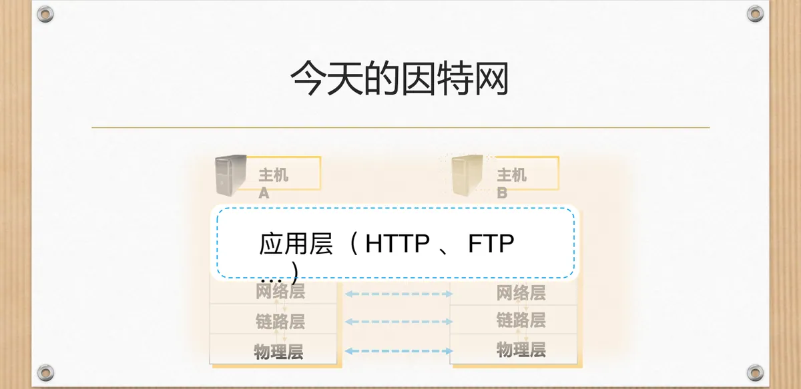
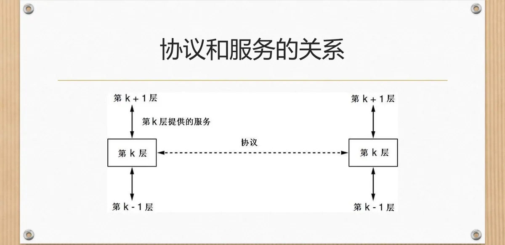
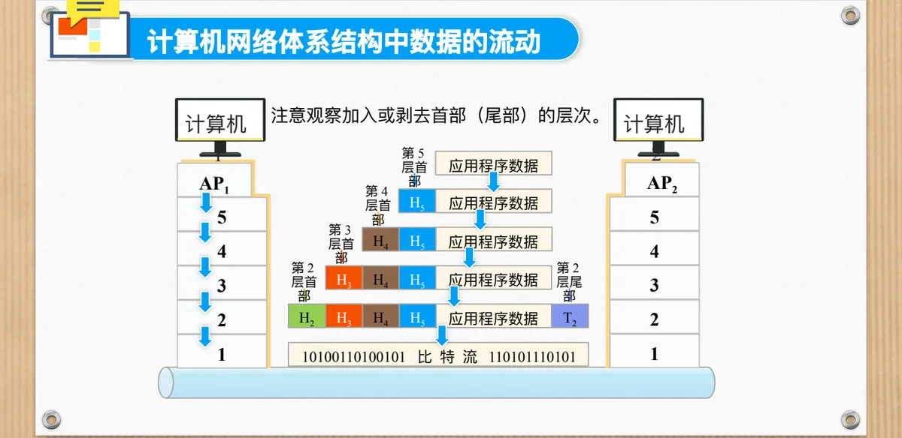
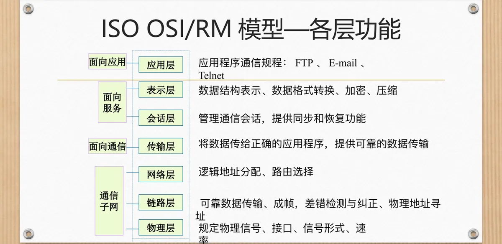
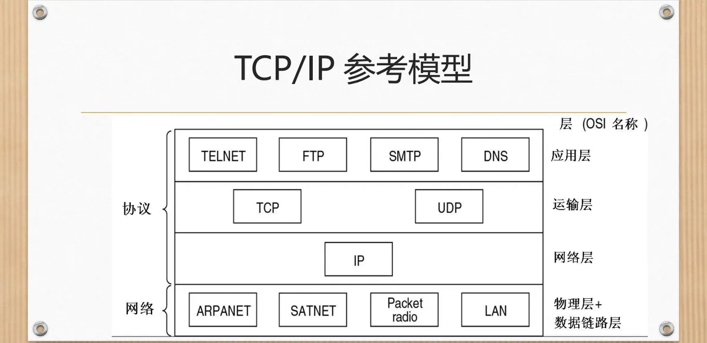
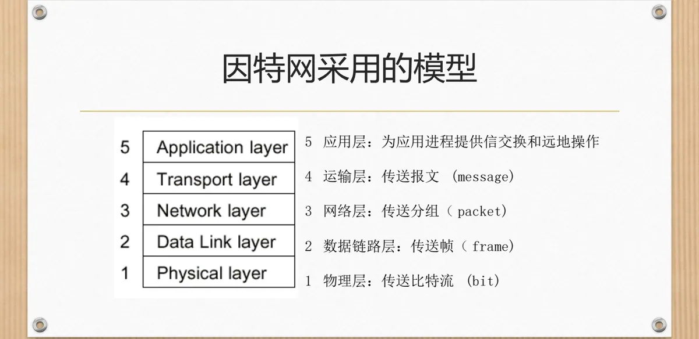

计算机通信与网络 · 第二版讲义 · 第 1 章 计算机网络概述
1.5 计算机网络的体系结构
两台计算机之间传送一个文件，看上去只是「发」与「收」两件事，真正做起来却要同时处理许多问题：用什么信号、怎样找到对方、数据丢了怎么办、两个程序之间如何约定格式。这些问题无法一次解决，网络设计者因此采用了一个古老而有效的办法——分层。本节先说明为什么要把通信分层，再集中交代分层中反复出现的术语：实体、协议、服务、接口与协议栈；然后看数据怎样沿协议栈逐层传递；最后比较 OSI 参考模型、TCP/IP 参考模型与因特网采用的五层模型。
1. 为什么要把通信分成层次
先看一个流传很广的比喻。两位哲学家想讨论问题，一位会讲乌尔都语和英语，另一位会讲法语和汉语，两人语言不通，于是各自请了一位翻译；两位翻译商定用荷兰语交流，语言转换的问题便解决了。可翻译之间隔着距离，说话要靠人送，两人又各配了一位秘书，由秘书把内容实际递送过去。这样，一次沟通被拆成了三层：哲学家负责表达意思，翻译负责语言转换，秘书负责传递。任何一层换人或者换语言，其他层都不必跟着改，只要相邻两层之间的约定不变。
通信协议面对的是同样的困境。两个应用程序交换数据，牵扯到的功能太多，无法由一段程序一次做完。分层的做法是把它分解成若干相对独立的子问题，每一层只解决其中一类，并且只使用下层提供的功能、向上层提供自己的功能。同一层的两个实体之间才需要遵守本层的约定，上下层之间通过明确的接口打交道。这样一来，每一层都可以独立设计、独立修改，也便于把功能定义成国际标准化的协议。

今天的因特网正是这样组织起来的。协议栈（Protocol Stack）是分层最直观的样子：两台主机各自拥有一套层次，每层使用自己的协议。从功能上看，仿佛是两台主机的同一层在对话；实际的数据却要沿着本方协议栈逐层向下，穿过物理媒体，再到对方主机逐层向上。
2. 分层结构中的常用术语
分层里只有两种基本关系：对等与相邻。前者靠协议维系，后者靠服务与接口维系。下面这些术语在各层反复出现，先集中交代清楚。
（1）实体与对等体
实体（Entity）是任何可以发送和接收信息的硬件和软件进程，通常就是一个特定的软件模块。对等体（Peer）则是不同机器上包含对应层的实体：主机 A 的应用层进程与主机 B 的应用层进程互为对等体。
（2）协议及其三要素
协议（Protocol）是通信双方关于如何进行通信的一种约定。约定要完整到可以直接执行，必须包含三个方面：
- 语法：数据与控制信息的结构或格式，相当于规定「怎么说」；
- 语义：需要发出何种控制信息、完成何种动作以及做出何种应答，相当于规定「说什么」；
- 同步：事件实现顺序的详细说明，相当于规定「先说什么、后说什么」。
三者缺一不可。只有格式而没有动作规定，收到数据也不知道该做什么；只有动作而没有先后顺序，双方就可能一直等着对方先开口。
（3）服务、服务原语、接口与服务访问点
同一台机器上相邻两层之间的关系，用另一组词来描述。服务（Service）是为保证上层对等体之间能互相通信，下层向上层提供的功能；相邻两层交互时所要交换的一些必要命令，称为服务原语。
接口（Interface）位于每一对相邻层之间，定义下层向上层提供的原语操作和服务；服务访问点 SAP（Service Access Point）则是同一系统中相邻两层的实体进行交互的地方。

协议与服务是分层里最容易混淆的一对概念。服务讲的是「做什么」，即下层向上层承诺提供的能力；协议讲的是「怎么做」，即同层对等实体为实现这些服务而约定的规则。二者的方向也不同：服务发生在上下相邻层之间，是垂直的；协议发生在两台机器的同层对等体之间，是水平的。协议对上层是隐蔽的：上层只需要知道自己能用什么服务，不必了解下层用什么协议去实现，所以只要服务不变，下层尽可以更换协议或改进实现。
（4）PDU 与 SDU
数据在层间传递时也要有名字。协议数据单元 PDU（Protocol Data Unit）是对等层次上传送数据的单位；服务数据单元 SDU（Service Data Unit）是层与层之间交换数据的单位。通俗地说，本层从上层收下来的数据是 SDU，本层给它加上自己的控制信息（首部，有的层还有尾部）之后就变成 PDU，交给下一层，随后又成为下层的 SDU——数据的「身份」随所在的层次而变化。
（5）网络体系结构与协议栈
把这些内容放到整体上看，就得到两个总结性的概念。网络体系结构（Network Architecture）是层和协议的集合：它规定分几层、每层做什么、层间如何交互，是抽象的定义，不涉及具体的实现技术。协议栈则是一个特定的系统所使用的一组协议，每层一个协议。体系结构相当于图纸，协议栈相当于按图纸配齐的一整套具体协议。
3. 数据在体系结构中怎样流动
把协议栈竖起来看，一次通信的全程就是数据沿本方协议栈下行、再沿对方协议栈上行的过程。以计算机 1 上的应用进程 AP1 向计算机 2 的应用进程 AP2 发送数据为例，发送方一侧的动作是：
- 应用进程数据先传送到第 5 层，第 5 层加上首部（H5），成为第 5 层 PDU；
- 第 5 层 PDU 再传送到第 4 层，第 4 层加上首部（H4），成为第 4 层 PDU；
- 第 4 层 PDU 传送到第 3 层，第 3 层加上首部（H3），成为第 3 层 PDU；
- 第 3 层 PDU 传送到第 2 层，第 2 层加上首部和尾部（H2 与 T2），成为第 2 层 PDU；
- 第 2 层 PDU 传送到第 1 层，最下面的第 1 层把比特流传送到物理媒体。
比特流以电信号或光信号的形式在物理媒体中传播，从发送端的第 1 层送到接收端的第 1 层。计算机 2 一侧的动作正好相反，是一层层「剥」出来的：第 1 层接收到比特流后上交给第 2 层；第 2 层剥去首部和尾部，把数据部分交给第 3 层；第 3 层剥去首部，把数据部分交给第 4 层；第 4 层再剥去首部，交给第 5 层；第 5 层剥去 PDU 首部，取出应用程序数据交给应用进程 AP2。至此，AP2 收到了 AP1 发来的应用程序数据。

这一过程有两点值得留意。其一，首部和尾部只在对等层之间有意义：第 N 层加上的首部，正是由对端的第 N 层来阅读并剥去，其他层次既不添加也不解释它。其二，真正在物理媒体上传送的只有最下面那一层的比特流，中间各层的「数据块」只是本机内部的处理形态。发送端逐层套上外衣的过程称为封装，接收端逐层脱去外衣的过程称为解封装；第 2 层之所以除了首部还要加一个尾部，正是因为成帧与差错检测需要这些字段。
4. OSI 参考模型：分层原则与七层功能
（1）分层的原则
层次不能随便划分。国际标准化组织在提出 OSI 参考模型时，给出了几条划分层次的原则：
- 当需要一个不同抽象体的时候，应该创建一层；
- 每一层都应该执行一个明确定义的功能；
- 选择每一层功能的时候，应该考虑到定义国际标准化的协议；
- 选择层边界的时候，应该使「跨接口所需要的信息流」尽可能小；
- 层数应该足够多，以保证不同的功能不会被混杂在同一层中；同时层数也不能太多，以免整个体系结构变得过于庞大。
这几条原则里分量最重的是「跨接口所需要的信息流尽可能小」：接口两侧的往来越少，两层就越容易各自独立地修改。最后一条则点出了分层的分寸——层太少会把不相干的功能挤在一起，层太多又会让系统臃肿、开销增加。
（2）七层及各层的功能
按照这些原则，OSI 参考模型把网络功能划分为七层，自下而上是物理层、数据链路层（课件中简称为链路层）、网络层、传输层、会话层、表示层和应用层。各层的职责可以概括如下：

| 层次 | 主要功能 |
|---|---|
| 应用层 | 应用程序的通信规程，如 FTP、E-mail、Telnet |
| 表示层 | 数据结构表示、数据格式转换、加密、压缩 |
| 会话层 | 管理通信会话，提供同步和恢复功能 |
| 传输层 | 将数据传给正确的应用程序，提供可靠的数据传输 |
| 网络层 | 逻辑地址分配、路由选择 |
| 链路层 | 可靠数据传输、成帧，差错检测与纠正、物理地址寻址 |
| 物理层 | 规定物理信号、接口、信号形式、速率 |
这张表里有几条线索。网络层及其以下的三层关心数据怎样一站一站地传过去，合起来构成通信子网，通常由路由器、交换机等设备承担；课件按关注点把各层标为「面向应用」「面向服务」「面向通信」几档，越靠上离应用程序越近，越靠下离物理传输越近。传输层处在两者中间，既是通信子网的使用者，又是上面各层的服务提供者，因而成为两个部分的交界；正因为各层职责清晰，OSI 参考模型才成为讨论网络问题的通用框架。
5. TCP/IP 参考模型及其与 OSI 的比较
OSI 参考模型是国际标准化组织制定的国际标准，而实际网络中真正被广泛使用的是另一个模型——TCP/IP 参考模型。它把网络功能划分为四层：应用层、运输层、网际层和网络接口层（又称主机至网络层）。

四层与 OSI 的七层可以大致对应：网络接口层承担了 OSI 物理层与数据链路层的任务，不过 TCP/IP 并没有把这两层区分开；网际层相当于 OSI 的网络层，但它只提供无连接的通信；运输层同时支持面向连接的 TCP 和无连接的 UDP；应用层则把 OSI 会话层、表示层与应用层的功能合并在一起，HTTP、FTP 等熟知的协议都属于这一层。
（1）两个模型的相同点
- 两者都是以协议栈的概念为基础，而且协议栈中的协议彼此独立；
- 两个模型中各个层的功能大体相似；
- 在两个模型中，传输层之上的各层都是传输服务的用户，并且是面向应用的用户。
（2）两个模型的差别
- 服务、接口和协议这三个概念是 OSI 模型的核心，并被非常明确地区别开来；TCP/IP 模型没有明确区分这三者，因此 OSI 模型中的协议具有更好的隐蔽性；
- OSI 模型先于其协议出现，TCP/IP 模型后于其协议出现。这使得 OSI 模型虽然具有通用性，却与实际出现了脱钩；TCP/IP 模型虽然不通用，却与现实吻合得很好；
- 两者面向连接和面向无连接的通信范围不同：OSI 模型的网络层同时支持面向连接和面向无连接的通信，传输层则只支持面向连接的通信；TCP/IP 模型的网络层只支持面向无连接的通信，传输层则同时支持两种通信模式。
（3）TCP/IP 参考模型的不足
- 该模型没有清楚地区分服务、接口和协议的概念；
- TCP/IP 模型并不通用，不适合用来描述 TCP/IP 之外的任何其他协议；
- 在分层协议环境中，主机至网络层并不是常规意义上的层的概念，只是一个位于网络层和数据链路层之间的接口；
- TCP/IP 模型并没有区分物理层和数据链路层；
- 一些特定的协议（如 Telnet）正在被广泛使用，难以被取代，从某种意义上成了技术进步的阻碍。
6. 因特网采用的五层模型
OSI 的七层与 TCP/IP 的四层各有短长，教学中常把两者折中，采用五层模型：保留 TCP/IP 的应用层、运输层和网络层，把网络接口层重新拆成数据链路层与物理层。这样既照顾了实际网络的组成，又能把物理层和数据链路层的分工讲清楚。

五层模型里，每一层都有自己的数据传送单位，术语随层次逐级变化：
- 物理层传送比特流（bit）；
- 数据链路层传送帧（frame）；
- 网络层传送分组（packet）；
- 运输层传送报文（message）；
- 应用层为应用进程提供信息交换和远地操作。
把这些单位与前面讲的 PDU 对照起来看会更清楚：帧、分组、报文分别是数据链路层、网络层和运输层的 PDU，到了物理层就变成没有内部结构的比特流。后面各章基本沿着这五层展开：第 2 章网络中的数据通信讲比特怎样在媒体上传输，第 3 章网络服务及应用介绍应用层协议，第 4 章局域网讲帧与链路，第 5 章网络互联讲分组怎样被转发与路由。
本节小结
- 分层是解决复杂通信问题的基本办法：把通信分解成职责单一的层次，同层对等实体遵守本层协议，相邻层通过服务与接口交互；
- 基本术语成对出现：实体与对等体、协议与服务、接口与服务访问点 SAP、PDU 与 SDU；网络体系结构是层和协议的集合，协议栈是一个系统所用的一组协议，每层一个；
- 协议与服务方向不同：服务是垂直的，发生在上下相邻层之间；协议是水平的，发生在两台机器的同层对等体之间。协议对上层隐蔽，更换下层实现不影响上层；
- 数据靠封装与解封装流动：发送端逐层加首部（第 2 层另加尾部），接收端逐层剥去，首部只在对应层的对等体之间有意义，物理媒体上传输的始终是比特流；
- OSI 参考模型分七层：物理层、数据链路层、网络层、传输层、会话层、表示层、应用层；分层原则要求每层功能明确、跨接口信息流尽量小、层数适中，网络层及其以下三层构成通信子网；
- TCP/IP 参考模型分四层，通用性差但贴合实际，且没有清楚区分服务、接口与协议；因特网的五层模型是两者的折中，各层传送单位依次是比特流、帧、分组、报文，这正是后面各章的分工线索。